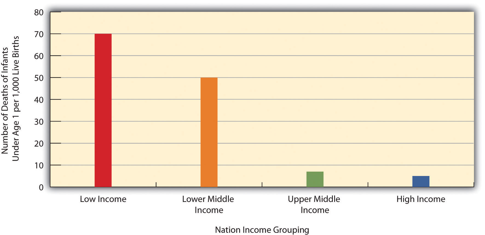
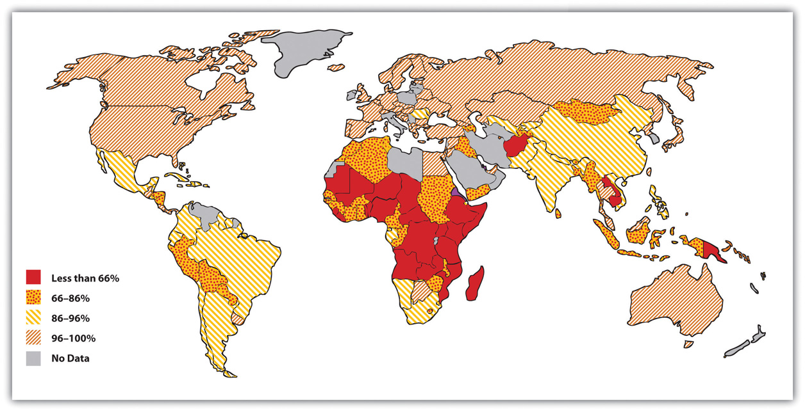
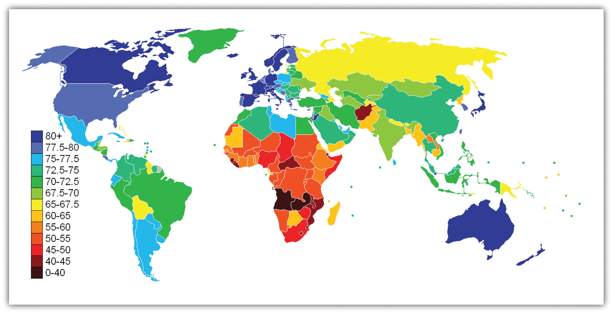
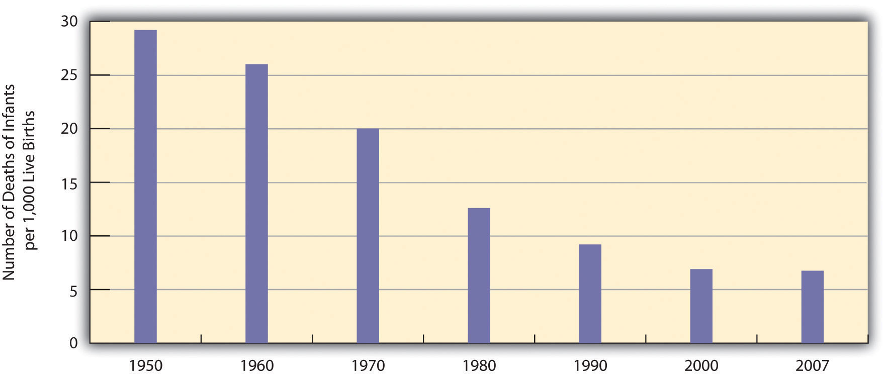
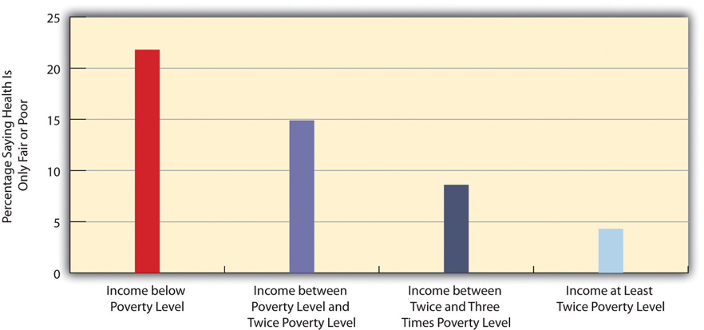
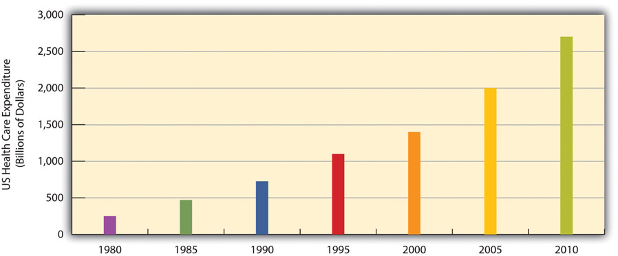
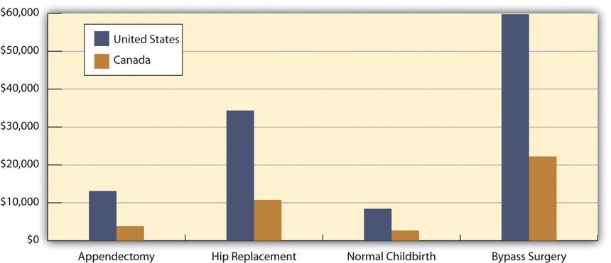
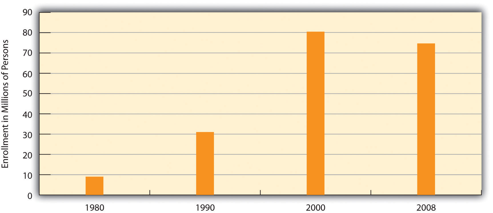

“More Columbus Kids Living in Poverty,” the headline said. New data from the Ohio Department of Education showed that three-fourths of schoolchildren in Columbus, Ohio, live in poverty or near poverty and qualify for federally subsidized school lunch. Ten years earlier, only about 58 percent of Columbus children qualified. According to the news report, “Childhood poverty directly impacts children’s health. Children living in poverty are less likely to receive needed medical care, more likely to have health problems such as asthma, more likely to be overweight, among other health problems.”
Source: Lietz, 2012Lietz, J. (2012, January 17). More Columbus kids living in poverty. Examiner.com. Retrieved from http://www.examiner.com/children-s-health-in-columbus/more-columbus-kids-living-poverty.
This news story reminds us that social class is linked to health and illness, and it illustrates just one of the many ways in which health and health care are urgent problems in our society. Accordingly, this chapter examines these problems. Its discussion is based on the common sociological view that health and illness are not just medical problems but social problems.
Unlike physicians, sociologists and other public health scholars do not try to understand why any one person becomes ill. Instead, they typically examine rates of illness to explain why people from certain social backgrounds are more likely than those from others to become sick. Here, as we will see, our social backgrounds—our social class, race and ethnicity, and gender—make a critical difference.
The fact that our social backgrounds affect our health may be difficult for many of us to accept. We all know someone who has died from a serious illness or currently suffers from one. There is always a medical cause of this person’s illness, and physicians do their best to try to cure it and prevent it from recurring. Sometimes they succeed; sometimes they fail. Whether someone suffers a serious illness is often simply a matter of bad luck or bad genes: We can do everything right and still become ill. In saying that our social backgrounds affect our health, sociologists do not deny any of these possibilities. They simply remind us that our social backgrounds also play an important role (Cockerham, 2012).Cockerham, W. C. (2012). Medical sociology (12th ed.). Upper Saddle River, NJ: Prentice Hall.
With this basic understanding in mind, we now turn to sociological perspectives on health and health care.
Before discussing these perspectives, we must first define three key concepts—health, medicine, and health care—that lie at the heart of their explanations and of this chapter’s discussion. HealthThe extent of a person’s physical, mental, and social well-being. refers to the extent of a person’s physical, mental, and social well-being. As this definition suggests, health is a multidimensional concept. Although the three dimensions of health just listed often affect each other, it is possible for someone to be in good physical health and poor mental health, or vice versa. MedicineThe social institution that seeks to prevent, diagnose, and treat illness and to promote health in its various dimensions. refers to the social institution that seeks to prevent, diagnose, and treat illness and to promote health in its various dimensions. This social institution in the United States is vast, to put it mildly, and involves more than 11 million people (physicians, nurses, dentists, therapists, medical records technicians, and many other occupations). Finally, health careThe provision of medical services to prevent, diagnose, and treat health problems. refers to the provision of medical services to prevent, diagnose, and treat health problems.
With these definitions in mind, we now turn to sociological explanations of health and health care. As usual, the major sociological perspectives that we have discussed throughout this book offer different types of explanations, but together they provide us with a more comprehensive understanding than any one approach can do by itself. Table 13.1 "Theory Snapshot" summarizes what they say.
Table 13.1 Theory Snapshot
| Theoretical perspective | Major assumptions |
|---|---|
| Functionalism | Good health and effective medical care are essential for the smooth functioning of society. Patients must perform the “sick role” in order to be perceived as legitimately ill and to be exempt from their normal obligations. The physician-patient relationship is hierarchical: The physician provides instructions, and the patient needs to follow them. |
| Conflict theory | Social inequality characterizes the quality of health and the quality of health care. People from disadvantaged social backgrounds are more likely to become ill and to receive inadequate health care. Partly to increase their incomes, physicians have tried to control the practice of medicine and to define social problems as medical problems. |
| Symbolic interactionism | Health and illness are social constructions: Physical and mental conditions have little or no objective reality but instead are considered healthy or ill conditions only if they are defined as such by a society. Physicians “manage the situation” to display their authority and medical knowledge. |
As conceived by Talcott Parsons (1951),Parsons, T. (1951). The social system. New York, NY: Free Press. the functionalist perspective emphasizes that good health and effective medical care are essential for a society’s ability to function. Ill health impairs our ability to perform our roles in society, and if too many people are unhealthy, society’s functioning and stability suffer. This was especially true for premature death, said Parsons, because it prevents individuals from fully carrying out all their social roles and thus represents a “poor return” to society for the various costs of pregnancy, birth, child care, and socialization of the individual who ends up dying early. Poor medical care is likewise dysfunctional for society, as people who are ill face greater difficulty in becoming healthy and people who are healthy are more likely to become ill.
For a person to be considered legitimately sick, said Parsons, several expectations must be met. He referred to these expectations as the sick roleExpectations of how people are supposed to think and act when they are ill.. First, sick people should not be perceived as having caused their own health problem. If we eat high-fat food, become obese, and have a heart attack, we evoke less sympathy than if we had practiced good nutrition and maintained a proper weight. If someone is driving drunk and smashes into a tree, there is much less sympathy than if the driver had been sober and skidded off the road in icy weather.
Second, sick people must want to get well. If they do not want to get well or, worse yet, are perceived as faking their illness or malingering after becoming healthier, they are no longer considered legitimately ill by the people who know them or, more generally, by society itself.
Third, sick people are expected to have their illness confirmed by a physician or other health-care professional and to follow the professional’s instructions in order to become well. If a sick person fails to do so, she or he again loses the right to perform the sick role.
If all these expectations are met, said Parsons, sick people are treated as sick by their family, their friends, and other people they know, and they become exempt from their normal obligations to all these people. Sometimes they are even told to stay in bed when they want to remain active.
Physicians also have a role to perform, said Parsons. First and foremost, they have to diagnose the person’s illness, decide how to treat it, and help the person become well. To do so, they need the cooperation of the patient, who must answer the physician’s questions accurately and follow the physician’s instructions. Parsons thus viewed the physician-patient relationship as hierarchical: the physician gives the orders (or, more accurately, provides advice and instructions), and the patient follows them.
Parsons was certainly right in emphasizing the importance of individuals’ good health for society’s health, but his perspective has been criticized for several reasons. First, his idea of the sick role applies more to acute (short-term) illness than to chronic (long-term) illness. Although much of his discussion implies a person temporarily enters a sick role and leaves it soon after following adequate medical care, people with chronic illnesses can be locked into a sick role for a very long time or even permanently. Second, Parsons’s discussion ignores the fact, mentioned earlier, that our social backgrounds affect the likelihood of becoming ill and the quality of medical care we receive. Third, Parsons wrote approvingly of the hierarchy implicit in the physician-patient relationship. Many experts say today that patients need to reduce this hierarchy by asking more questions of their physicians and by taking a more active role in maintaining their health. To the extent that physicians do not always provide the best medical care, the hierarchy that Parsons favored is at least partly to blame.
The conflict approach emphasizes inequality in the quality of health and of health-care delivery (Weitz, 2013).Weitz, R. (2013). The sociology of health, illness, and health care: A critical approach (6th ed.). Thousand Oaks, CA: Wadsworth. As noted earlier, the quality of health and health care differs greatly around the world and within the United States. Society’s inequities along social class, race and ethnicity, and gender lines are reproduced in our health and health care. People from disadvantaged social backgrounds are more likely to become ill, and once they do become ill, inadequate health care makes it more difficult for them to become well. As we will see, the evidence of disparities in health and health care is vast and dramatic.
The conflict approach also critiques efforts by physicians over the decades to control the practice of medicine and to define various social problems as medical ones. Physicians’ motivation for doing so has been both good and bad. On the good side, they have believed they are the most qualified professionals to diagnose problems and to treat people who have these problems. On the negative side, they have also recognized that their financial status will improve if they succeed in characterizing social problems as medical problems and in monopolizing the treatment of these problems. Once these problems become “medicalized,” their possible social roots and thus potential solutions are neglected.
Several examples illustrate conflict theory’s criticism. Alternative medicine is becoming increasingly popular, but so has criticism of it by the medical establishment. Physicians may honestly feel that medical alternatives are inadequate, ineffective, or even dangerous, but they also recognize that the use of these alternatives is financially harmful to their own practices. Eating disorders also illustrate conflict theory’s criticism. Many of the women and girls who have eating disorders receive help from a physician, a psychiatrist, a psychologist, or another health-care professional. Although this care is often very helpful, the definition of eating disorders as a medical problem nonetheless provides a good source of income for the professionals who treat it and obscures its cultural roots in society’s standard of beauty for women (Whitehead & Kurz, 2008).Whitehead, K., & Kurz, T. (2008). Saints, sinners and standards of femininity: Discursive constructions of anorexia nervosa and obesity in women’s magazines. Journal of Gender Studies, 17, 345–358.
Obstetrical care provides another example. In most of human history, midwives or their equivalent were the people who helped pregnant women deliver their babies. In the nineteenth century, physicians claimed they were better trained than midwives and won legislation giving them authority to deliver babies. They may have honestly felt that midwives were inadequately trained, but they also fully recognized that obstetrical care would be quite lucrative (Ehrenreich & English, 2005).
In a final example, many hyperactive children are now diagnosed with ADHD, or attention deficit/hyperactivity disorder. A generation or more ago, they would have been considered merely as overly active. After Ritalin, a drug that reduces hyperactivity, was developed, their behavior came to be considered a medical problem and the ADHD diagnosis was increasingly applied, and tens of thousands of children went to physicians’ offices and were given Ritalin or similar drugs. The definition of their behavior as a medical problem was very lucrative for physicians and for the company that developed Ritalin, and it also obscured the possible roots of their behavior in inadequate parenting, stultifying schools, or even gender socialization, as most hyperactive kids are boys (Conrad, 2008; Rao & Seaton, 2010).Conrad, P. (2008). The medicalization of society: On the transformation of human conditions into treatable disorders. Baltimore, MD: Johns Hopkins University Press; Rao, A., & Seaton, M. (2010). The way of boys: Promoting the social and emotional development of young boys. New York, NY: Harper Paperbacks.
Critics say the conflict approach’s assessment of health and medicine is overly harsh and its criticism of physicians’ motivation far too cynical. Scientific medicine has greatly improved the health of people around the world. Although physicians are certainly motivated, as many people are, by economic considerations, their efforts to extend their scope into previously nonmedical areas also stem from honest beliefs that people’s health and lives will improve if these efforts succeed. Certainly there is some truth in this criticism of the conflict approach, but the evidence of inequality in health and medicine and of the negative aspects of the medical establishment’s motivation for extending its reach remains compelling.
The symbolic interactionist approach emphasizes that health and illness are social constructions. This means that various physical and mental conditions have little or no objective reality but instead are considered healthy or ill conditions only if they are defined as such by a society and its members (Buckser, 2009; Lorber & Moore, 2002).Buckser, A. (2009). Institutions, agency, and illness in the making of Tourette syndrome. Human Organization, 68(3), 293–306; Lorber, J., & Moore, L. J. (2002). Gender and the social construction of illness (2nd ed.). Lanham, MD: Rowman & Littlefield. The ADHD example just discussed also illustrates symbolic interactionist theory’s concerns, as a behavior that was not previously considered an illness came to be defined as one after the development of Ritalin. In another example first discussed in Chapter 7 "Alcohol and Other Drugs", in the late 1800s opium use was quite common in the United States, as opium derivatives were included in all sorts of over-the-counter products. Opium use was considered neither a major health nor legal problem. That changed by the end of the century, as prejudice against Chinese Americans led to the banning of the opium dens (similar to today’s bars) they frequented, and calls for the banning of opium led to federal legislation early in the twentieth century that banned most opium products except by prescription (Musto, 2002).Musto, D. F. (Ed.). (2002). Drugs in America: A documentary history. New York, NY: New York University Press.
In a more current example, an attempt to redefine obesity is now under way in the United States. Obesity is a known health risk, but a “fat pride” or “fat acceptance” movement composed mainly of heavy individuals is arguing that obesity’s health risks are exaggerated and calling attention to society’s discrimination against overweight people. Although such discrimination is certainly unfortunate, critics say the movement is going too far in trying to minimize obesity’s risks (Diamond, 2011).Diamond, A. (2011). Acceptance of fat as the norm is a cause for concern. Nursing Standard, 25(38), 28–28.
The symbolic interactionist approach has also provided important studies of the interaction between patients and health-care professionals. Consciously or not, physicians “manage the situation” to display their authority and medical knowledge. Patients usually have to wait a long time for the physician to show up, and the physician is often in a white lab coat; the physician is also often addressed as “Doctor,” while patients are often called by their first name. Physicians typically use complex medical terms to describe a patient’s illness instead of the more simple terms used by laypeople and the patients themselves.
Management of the situation is perhaps especially important during a gynecological exam, as first discussed in Chapter 12 "Work and the Economy". When the physician is a man, this situation is fraught with potential embarrassment and uneasiness because a man is examining and touching a woman’s genital area. Under these circumstances, the physician must act in a purely professional manner. He must indicate no personal interest in the woman’s body and must instead treat the exam no differently from any other type of exam. To further “desex” the situation and reduce any potential uneasiness, a female nurse is often present during the exam.
Critics fault the symbolic interactionist approach for implying that no illnesses have objective reality. Many serious health conditions do exist and put people at risk for their health regardless of what they or their society thinks. Critics also say the approach neglects the effects of social inequality for health and illness. Despite these possible faults, the symbolic interactionist approach reminds us that health and illness do have a subjective as well as an objective reality.
As we have seen in previous chapters, understanding what happens in other societies helps us to understand what happens in our own society. This section’s discussion of health and health care across the globe, then, helps shed some light on what is good and bad about US health and medicine.
The nations of the world differ dramatically in the quality of their health and health care. The poorest nations suffer terribly. Their people suffer from poor nutrition, unsafe water, inadequate sanitation, rampant disease, and inadequate health care. One disease they suffer from is AIDS. Some 34 million people worldwide have HIV/AIDS, and two-thirds of these live in sub-Saharan Africa. Almost two million people, most of them from this region, died in 2010 from HIV/AIDS (World Health Organization, 2011).World Health Organization. (2011). Global response: Epidemic update and health sector progress towards universal access. Retrieved from http://www.who.int/hiv/en/index.html. All these health problems produce high rates of infant mortality and maternal mortality and high death rates. For all these reasons, people in the poorest nations have shorter life spans than those in the richest nations.
A few health indicators should indicate the depth of the problem. Figure 13.1 "Infant Mortality for Low-Income, Lower-Middle-Income, Higher-Middle-Income, and High-Income Nations, 2010" compares an important indicator, infant mortality (number of deaths before age 1 per 1,000 live births) for nations grouped into four income categories. The striking contrast between the two groups provides dramatic evidence of the health problems poor nations face. When, as Figure 13.1 "Infant Mortality for Low-Income, Lower-Middle-Income, Higher-Middle-Income, and High-Income Nations, 2010" indicates, 70 children in the poorest nations die before their first birthday for every 1,000 live births (equivalent to 7 out of 100), the poor nations have serious problems indeed.
Figure 13.1 Infant Mortality for Low-Income, Lower-Middle-Income, Higher-Middle-Income, and High-Income Nations, 2010
Source: Data from World Bank. (2012). World databank. Retrieved from http://databank.worldbank.org/ddp/home.do?Step=1&id=4.
Figure 13.2 "Percentage of Population with Access to Adequate Sanitation Facilities, 2008" shows how the world differs in access to adequate sanitation facilities (i.e., the removal of human waste from the physical environment, as by toilets). Whereas this percentage is at least 98 percent in the wealthy nations of North America, Western Europe, Australia, and New Zealand, it is less than 33 percent in many poor nations in Africa and Asia.
Figure 13.2 Percentage of Population with Access to Adequate Sanitation Facilities, 2008
Source: Adapted from World Bank. (2010). Improved sanitation facilities (% of population with access). Retrieved from http://www.worldbank.org.
Two-thirds of the 33 million people worldwide who have HIV/AIDS live in sub-Saharan Africa. This terrible fact illustrates just one of the many health problems that people in poor nations suffer.
Image courtesy of khym54, http://www.flickr.com/photos/khym54/144915009.
Life expectancy is another important measure of a nation’s health and is very relevant for understanding worldwide disparities in health and health care. Figure 13.3 "Average Life Expectancy across the Globe (Years)" illustrates these disparities. Not surprisingly, the global differences in this map are similar to those for adequate sanitation in the map depicted in Figure 13.2 "Percentage of Population with Access to Adequate Sanitation Facilities, 2008". North America, Western Europe, Australia, and New Zealand have much longer life expectancies (75 years and higher) than Africa and Asia, where some nations have expectancies below 50 years. The society we live in can affect our life span by more than a quarter of a century.
Figure 13.3 Average Life Expectancy across the Globe (Years)
Source: Adapted from http://en.wikipedia.org/wiki/File:Life_Expectancy_2011_Estimates_CIA_World_Factbook.png.
Industrial nations throughout the world, with the notable exception of the United States, provide their citizens with some form of national health care and national health insuranceA system of medicine in which the government pays all or most of the costs of health care, prescriptions, and other items for the entire population. (Russell, 2011).Russell, J. W. (2011). Double standard: Social policy in Europe and the United States (2nd ed.). Lanham, MD: Rowman & Littlefield. Although their health-care systems differ in several respects, their governments pay all or most of the costs for health care, drugs, and other health needs. In Denmark, for example, the government provides free medical care and hospitalization for the entire population and pays for some medications and some dental care. In France, the government pays for some of the medical, hospitalization, and medication costs for most people and all these expenses for the poor, unemployed, and children under the age of 10. In Great Britain, the National Health Service pays most medical costs for the population, including medical care, hospitalization, prescriptions, dental care, and eyeglasses. In Canada, the National Health Insurance system also pays for most medical costs. Patients do not even receive bills from their physicians, who instead are paid by the government.
Although these national health insurance programs are not perfect—for example, people sometimes must wait for elective surgery and some other procedures—they are commonly credited with reducing infant mortality, extending life expectancy, and, more generally, for enabling their citizenries to have relatively good health. Their populations are generally healthier than Americans, even though health-care spending is much higher per capita in the United States than in these other nations. In all these respects, these national health insurance systems offer several advantages over the health-care model found in the United States (Reid, 2010)Reid, T. R. (2010). The healing of America: A global quest for better, cheaper, and fairer health care. New York, NY: Penguin Press. (see Note 13.11 "Lessons from Other Societies").
National Health Care in Wealthy Democracies
As the text discusses, industrial nations other than the United States provide free or low-cost health care to their citizens in what is known as national (or universal) health insurance and national health care. Although the United States spends more per capita than these nations on health care, it generally ranks much lower than they do on important health indicators. Of twenty-four wealthy democracies from North America, Western Europe, and certain other parts of the world (Australia, Japan, New Zealand; the exact number of nations varies slightly by indicator), the United States has the lowest life expectancy, the highest infant mortality, and the highest rates of obesity, adult diabetes, and HIV and AIDS. It ranks only twenty-first in mortality from heart disease and only tenth in breast cancer mortality rate. The United States also ranks twenty-second for annual doctor consultations per capita and among the highest for hospital admissions for various conditions, such as respiratory disease, that are avoidable with adequate primary and outpatient care. According to policy analyst Lawrence Mishel and colleagues, the conclusion from these international comparisons is inescapable: “Although the United States spends more on health care than other countries with similar per capita income and populations, it has worse health outcomes, on average…Compared to the United States, other countries are more committed to the health and well-being of their citizens through more-universal coverage and more-comprehensive health care systems.”
Because of Canada’s proximity, many studies compare health and health-care indicators between the United States and Canada. A recent review summarized the evidence: “Although studies’ findings go in both directions, the bulk of the research finds higher quality of care in Canada.”
Surveys of random samples of citizens in several nations provide additional evidence of the advantages of the type of health care found outside the United States and the disadvantages of the US system. In surveys in 2007 of US residents and those of six other nations (Australia, Canada, Germany, the Netherlands, New Zealand, and the United Kingdom), Americans ranked highest in the percentage uninsured (16 percent in the United States compared to 0–2 percent elsewhere), highest in the percentage that did not receive needed medical care during the last year because of costs, and highest by far in the percentage that had “serious problems” in paying medical bills in the past year.
A fair conclusion from all the evidence is that US health lags behind that found in other wealthy nations because the latter provide free or low-cost national health care to their citizens and the United States does not. If so, the United States has much to learn from their example. Because the health-care reform achieved in the United States in 2009 and 2010 did not include a national health-care model, the United States will likely continue to lag behind other democracies in the quality of health and health care. At the same time, the cost of health care will certainly continue to be much higher in the United States than in other Western nations, in part because the United States uses a fee-for-service model in which many physicians are paid for every procedure they do rather than the set salary that some other nations feature.
Sources: Docteur & Berenson, 2009; Mishel, Bernstein, & Shierholz, 2009; Organisation for Economic Co-operation and Development, 2011; Schoen et al., 2007Docteur, E., & Berenson, R. A. (2009). How does the quality of US health care compare internationally? Washington, DC: Urban Institute Press; Mishel, L., Bernstein, J., & Shierholz, H. (2009). The state of working America 2008/2009. Ithaca, NY: ILR Press; Organisation for Economic Co-operation and Development. (2011). Health at a glance 2011: OECD indicators. Paris, France: Author; Schoen, C., Osborn, R., Doty, M. M., Bishop, M., Peugh, J., & Murukutla, N. (2007). Toward higher-performance health systems: Adults’ health care experiences in seven countries, 2007. Health Affairs 26(6), w717–w734.
When we examine health and health care in the United States, there is both good news and bad news. The good news is considerable. Health has improved steadily over the last century, thanks in large part to better public sanitation and the discovery of antibiotics. Illnesses and diseases such as pneumonia and polio that used to kill or debilitate people are either unknown today or treatable by modern drugs. Other medical discoveries and advances have also reduced the extent and seriousness of major illnesses, including many types of cancer, and have prolonged our lives.
Because of these and other factors, the US average life expectancy climbed from about 47 years in 1900 to about 78 years in 2010. Similarly, infant mortality dropped dramatically in the last half-century from 29.2 infant deaths per 1,000 live births in 1950 to only 6.75 in 2007 (see Figure 13.4 "Infant Deaths per 1,000 Live Births, United States, 1950–2007"). Cigarette smoking declined from 51 percent for males and 34 percent for females in 1965 to 23 percent and 18 percent, respectively, in 2009 (National Center for Health Statistics, 2011).National Center for Health Statistics. (2011). Health, United States, 2010. Hyattsville, MD: Centers for Disease Control and Prevention. In another area, various policies during the past three decades have dramatically reduced levels of lead in young children’s blood: 88 percent of children had unsafe levels in the mid-1970s, compared to less than 2 percent three decades later (Centers for Disease Control and Prevention, 2007).Centers for Disease Control and Prevention. (2007). Interpreting and managing blood lead levels <10 μg/dL in children and reducing childhood exposures to lead: Recommendations of CDC’s advisory committee on childhood lead poisoning prevention. MMWR (Morbidity and Mortality Weekly Report), 56(RR-8), 1–16.
Figure 13.4 Infant Deaths per 1,000 Live Births, United States, 1950–2007
Source: Data from National Center for Health Statistics. (2011). Health, United States, 2010. Hyattsville, MD: Centers for Disease Control and Prevention.
Unfortunately, the bad news is also considerable. Despite all the gains just mentioned, the United States lags behind most other wealthy democracies in several health indicators, as we have seen, even though it is the wealthiest nation in the world. Moreover, 14.5 percent of US households and almost 49 million Americans are “food insecure” (lacking sufficient money for adequate food and nutrition) at least part of the year; more than one-fifth of all children live in such households (Coleman-Jensen, Nord, Andrews, & Carlson, 2011).Coleman-Jensen, A., Nord, M., Andrews, M., & Carlson, S. (2011). Household food security in the United States in 2010. Washington, DC: US Department of Agriculture. More than 8 percent of all infants are born at low birth weight (under 5.5 pounds), putting them at risk for long-term health problems; this figure has risen steadily since the late 1980s and is higher than the 1970 rate (National Center for Health Statistics, 2011).National Center for Health Statistics. (2011). Health, United States, 2010. Hyattsville, MD: Centers for Disease Control and Prevention. In other areas, childhood rates of obesity, asthma, and some other chronic conditions are on the rise, with about one-third of children considered obese or overweight (Van Cleave, Gortmaker, & Perrin, 2010).Van Cleave, J., Gortmaker, S. L., & Perrin, J. M. (2010). Dynamics of obesity and chronic health conditions among children and youth. JAMA, 303(7), 623–630. Clearly the United States still has a long way to go in improving the nation’s health.
There is also bad news in the social distribution of health. Health problems in the United States are more often found among the poor, among people from certain racial and ethnic backgrounds, and, depending on the problem, among women or men. Social epidemiologyThe study of how health and illness vary by social and demographic characteristics such as social class, race and ethnicity, and gender. refers to the study of how health and illness vary by sociodemographic characteristics, with such variations called health disparitiesDifferences in health and illness according to social class, race and ethnicity, and gender.. When we examine social epidemiology in the United States, we see that many health disparities exist. In this way, health and illness both reflect and reinforce society’s social inequalities. We now turn to the most important health disparities, starting with physical health and then mental health.
Not only do the poor have less money, but they also have much worse health, as the news story that began this chapter illustrated. There is growing recognition in the government and in medical and academic communities that social class makes a huge difference when it comes to health and illness (Centers for Disease Control and Prevention, 2011).Centers for Disease Control and Prevention. (2011). CDC health disparities and inequalities report—United States, 2011. Morbidity and Mortality Weekly Report, 60, 1–114.
Many types of health indicators illustrate the social class–health link in the United States. In an annual survey conducted by the government, people are asked to indicate the quality of their health. As Figure 13.5 "Family Income and Self-Reported Health (Percentage of People 18 or Over Saying Health Is Only Fair or Poor), 2009" shows, poor people are much more likely than those with higher incomes to say their health is only fair or poor. These self-reports of health are subjective indicators, and it is possible that not everyone interprets “fair” or “poor” health in the same way. But objective indicators of actual health also indicate a strong social class–health link (National Center for Health Statistics, 2011).National Center for Health Statistics. (2011). Health, United States, 2010. Hyattsville, MD: Centers for Disease Control and Prevention.
Figure 13.5 Family Income and Self-Reported Health (Percentage of People 18 or Over Saying Health Is Only Fair or Poor), 2009
Source: Data from National Center for Health Statistics. (2011). Health, United States, 2010. Hyattsville, MD: Centers for Disease Control and Prevention.
The Poor Health of Poor Children
When we consider health disparities, some of the most unsettling evidence involves children. As a recent report by the Robert Wood Johnson Foundation concluded, “The data illustrate a consistent and striking pattern of incremental improvements in health with increasing levels of family income and educational attainment: As family income and levels of education rise, health improves. In almost every state, shortfalls in health are greatest among children in the poorest or least educated households, but even middle-class children are less healthy than children with greater advantages.”
Some government data illustrate the difference that poverty makes for the nation’s children:
In these and other ways, children in low-income families are more likely than children in wealthier families to have more health problems, many of which last into adolescence and adulthood. Poor children’s poor health thus makes a critical difference throughout their lives. As sociologist Steven A. Haas and colleagues observe, “A growing body of work demonstrates that those who experience poor health early in life go on to complete less schooling, hold less prestigious jobs, and earn less than their healthier childhood peers.”
One reason for the poor health of poor children is that their families are more likely to experience many kinds of stress (see Chapter 2 "Poverty"). Another reason is that their families are more likely to experience food insecurity and, if they are urban, to live in neighborhoods with higher levels of lead and pollution. Low-income children also tend to watch television more often than wealthier children and for this and other reasons to be less physically active; their relative lack of physical activity is yet another reason for their worse health. Finally, their parents are much more likely than wealthier parents to smoke cigarettes; the secondhand smoke they inhale impairs their health.
The clear evidence of poverty’s effects on the health of poor children underscores the need of the United States to do everything possible to minimize these effects. Any money spent to reduce these effects will pay for itself many times over throughout these children’s lifetimes: They will have fewer health problems as they grow up, costing the United States much less in health care, and be better able to do well in school and to have higher incomes as adults. In both the short run and long run, then, improving the health of poor children will also improve the economic and social health of the whole nation.
Sources: Haas, Glymour, & Berkman, 2011; Kaplan, 2009; Murphey, Mackintosh, & McCoy-Roth, 2011; Robert Wood Johnson Foundation, 2008Haas, S. A., Glymour, M., & Berkman, L. F. (2011). Childhood health and labor market inequality over the life course. Journal of Health and Social Behavior, 52, 298–313; Kaplan, G. A. (2009). The poor pay more: Poverty’s high cost to health. Princeton, NJ: Robert Wood Johnson Foundation; Murphey, D., Mackintosh, B., & McCoy-Roth, M. (2011). Early childhood policy focus: Health eating and physical activity. Early Childhood Highlights, 2(3), 1–9; Robert Wood Johnson Foundation. (2008). America’s health starts with healthy children: How do states compare? Princeton, NJ: Author.
For example, poor adults are also at much greater risk for many health problems, including heart disease, diabetes, arthritis, and some types of cancer. Rates of high blood pressure, serious heart conditions, and diabetes are at least twice as high for middle-aged adults with family incomes below the poverty level than for those with incomes at least twice the poverty level. All these social class differences in health contribute to a striking difference in life expectancy, with Americans whose family incomes are more than four times the federal poverty level expected to live 6.5 years longer than those living in poverty (Kaplan, 2009).Kaplan, G. A. (2009). The poor pay more: Poverty’s high cost to health. Princeton, NJ: Robert Wood Johnson Foundation.
Several reasons account for the social class–health link (Pampel, Krueger, & Denney, 2010).Pampel, F. C., Krueger, P. M., & Denney, J. T. (2010). Socioeconomic disparities in health behaviors. Annual Review of Sociology, 36, 349–370. One reason is stress, which, as Chapter 2 "Poverty" explained, is higher for people with low incomes because of unemployment, problems in paying for the necessities of life, and a sense of little control over what happens to them. Stress in turn damages health because it impairs the immune system and other bodily processes.
A second reason is that poor people live in conditions, including crowded, dilapidated housing with poor sanitation, that are bad for their health and especially that of their children. Although these conditions have improved markedly in the United States over the last few decades, they continue for many of the poor.
Another reason for the poor’s worse health is their lack of access to adequate health care. As is well known, many poor people lack medical insurance and in other respects have inadequate health care. These problems make it more likely they will become ill in the first place and more difficult for them to become well because they cannot afford to visit a physician or to receive other health care. Still, social class disparities in health exist even in countries that provide free national health care, a fact that underscores the importance of the other reasons discussed here for the social class–health link (Elo, 2009).Elo, I. T. (2009). Social class differentials in health and mortality: Patterns and explanations in comparative perspective. Annual Review of Sociology, 35, 553–572.
A fourth reason is a lack of education, which, in ways not yet well understood, leads poor people to be unaware or unconcerned about risk factors for health and to have a fatalistic attitude that promotes unhealthy behaviors and reluctance to heed medical advice (Elo, 2009).Elo, I. T. (2009). Social class differentials in health and mortality: Patterns and explanations in comparative perspective. Annual Review of Sociology, 35, 553–572. In one study of whether smokers quit smoking after a heart attack, only 10 percent of heart attack patients without a high school degree quit smoking, compared to almost 90 percent of those with a college degree (Wray, Herzog, Willis, & Wallace, 1998).Wray, L. A., Herzog, A. R., Willis, R. J., & Wallace, R. B. (1998). The impact of education and heart attack on smoking cessation among middle-aged adults. Journal of Health and Social Behavior, 39, 271–294.
A final reason for the poor health of poor people is unhealthy lifestyles, as just implied. Although it might sound like a stereotype, poor people are more likely to smoke, to eat high-fat food, to avoid exercise, to be overweight, and, more generally, not to do what they need to do (or to do what they should not be doing) to be healthy (Pampel et al., 2010).Pampel, F. C., Krueger, P. M., & Denney, J. T. (2010). Socioeconomic disparities in health behaviors. Annual Review of Sociology, 36, 349–370. Scholars continue to debate whether unhealthy lifestyles are more important in explaining poor people’s poor health than the other factors just discussed. Regardless of the proper mix of reasons, the fact remains that the poor have worse health.
Health differences also exist when we examine the effects of race and ethnicity, and they are literally a matter of life and death. We can see this when we compare life expectancies for whites and African Americans born in 2006 (Table 13.2 "US Life Expectancy at Birth for People Born in 2007"). When we do not take gender into account, African Americans can expect to live about five fewer years than whites. Among men, they can expect to live almost six fewer years, and among women, four fewer years.
Table 13.2 US Life Expectancy at Birth for People Born in 2007
| African American | Both sexes | 73.6 |
| Men | 70.0 | |
| Women | 76.8 | |
| White | Both sexes | 78.4 |
| Men | 75.9 | |
| Women | 80.8 |
Source: Data from National Center for Health Statistics. (2011). Health, United States, 2010. Hyattsville, MD: Centers for Disease Control and Prevention.
At the beginning of the life course, infant mortality also varies by race and ethnicity (Table 13.3 "Mother’s Race/Ethnicity and US Infant Mortality, 2006 (Number of Infant Deaths per 1,000 Live Births)"), with African American infants more than twice as likely as white infants to die before their first birthday. Infant mortality among Native Americans is almost 1.5 times the white rate, while that for Latinos is about the same (although the Puerto Rican rate is also higher, at 8.0), and Asians a bit lower. In a related indicator, maternal mortality (from complications of pregnancy or childbirth) stands at 8.1 maternal deaths for every 100,000 live births for non-Latina white women, 7.2 for Latina women, and a troubling 23.8 for African American women. Maternal mortality for African American women is thus about three times greater than that for the other two groups.
Table 13.3 Mother’s Race/Ethnicity and US Infant Mortality, 2006 (Number of Infant Deaths per 1,000 Live Births)
| African American | 12.9 |
| Asian or Pacific Islander | 4.5 |
| Latina | 5.4 |
| Central and South American | 4.5 |
| Cuban | 5.1 |
| Mexican | 5.3 |
| Puerto Rican | 8.0 |
| Native American | 8.3 |
| White | 5.6 |
Source: Data from National Center for Health Statistics. (2011). Health, United States, 2010. Hyattsville, MD: Centers for Disease Control and Prevention.
In other indicators, African Americans are more likely than whites to die from heart disease, although the white rate of such deaths is higher than the rates of Asians, Latinos, and Native Americans. African Americans are also more likely than whites to be overweight and to suffer from asthma, diabetes, high blood pressure, and several types of cancer. Latinos and Native Americans have higher rates than whites of several illnesses and conditions, including diabetes.
Commenting on all these disparities in health, a former head of the US Department of Health and Human Services said a decade ago, “We have been—and remain—two nations: one majority, one minority—separated by the quality of our health” (Penn et al., 2000, p. 102).Penn, N. E., Kramer, J., Skinner, J. F., Velasquez, R. J., Yee, B. W. K., Arellano, L. M., et al. (2000). Health practices and health-care systems among cultural groups. In R. M. Eisler & M. Hersen (Eds.), Handbook of gender, culture, and health (pp. 101–132). New York, NY: Routledge. The examples just discussed certainly indicate that her statement is still true today.
Why do such large racial and ethnic disparities in health exist? To a large degree, they reflect the high poverty rates for African Americans, Latinos, and Native Americans compared to those for whites. In addition, inadequate medical care is perhaps a special problem for people of color, thanks to unconscious racial bias among health-care professionals that affects the quality of care that people of color receive (see discussion later in this chapter).
An additional reason for racial disparities in health is diet. Many of the foods that have long been part of African American culture are high in fat. Partly as a result, African Americans are much more likely than whites to have heart disease and high blood pressure and to die from these conditions (Parra-Medina et al., 2010).Parra-Medina, D., Wilcox, S., Wilson, D. K., Addy, C. L., Felton, G., & Poston, M. B. (2010). Heart healthy and ethnically relevant (HHER) lifestyle trial for improving diet and physical activity in underserved African American women. Contemporary Clinical Trials, 31(1), 92–104. In contrast, first-generation Latinos tend to have diets consisting of beans, grains, and other low-fat foods, preventing health problems stemming from their poverty from being even worse. But as the years go by and they adopt the typical American’s eating habits, their diets tend to worsen, and their health worsens as well (Pérez-Escamilla, 2009).Pérez-Escamilla, R. (2009). Dietary quality among Latinos: Is acculturation making us sick? Journal of the American Dietetic Association, 109(6), 988–991.
In a significant finding, African Americans tend to have worse health than whites even among those with the same incomes. Several reasons explain this racial gap. One is the extra stress that African Americans of all incomes face because they live in a society that is still racially prejudiced and discriminatory (Bratter & Gorman, 2011).Bratter, J. L., & Gorman, B. K. (2011). Is discrimination an equal opportunity risk? Racial experiences, socioeconomic status, and health status among black and white adults. Journal of Health and Social Behavior, 52, 365–382. In this regard, studies find that African Americans and Latinos who have experienced the most racial discrimination in their daily lives tend to have worse physical health (Lee & Ferraro, 2009).Lee, M.-A., & Ferraro, K. F. (2009). Perceived discrimination and health among Puerto Rican and Mexican Americans: Buffering effect of the lazo matrimonial? Social Science & Medicine, 68, 1966–1974. Some middle-class African Americans may also have grown up in poor families and incurred health problems in childhood that continue to affect them. As a former US surgeon general once explained, “You’re never dealing with a person just today. You’re dealing with everything they’ve been exposed to throughout their lives. Does it ever end? Our hypothesis is that it never ends” (Meckler, 1998, p. 4A).Meckler, L. (1998, November 27). Health gap between races persists. Ocala Star-Banner, p. 4A.
To some degree, racial differences in health may also have a biological basis. For example, African American men appear to have higher levels of a certain growth protein that may promote prostate cancer; African American smokers may absorb more nicotine than white smokers; and differences in the ways African Americans’ blood vessels react may render them more susceptible to hypertension and heart disease (Meckler, 1998; Ricker & Bird, 2005).Meckler, L. (1998, November 27). Health gap between races persists. Ocala Star-Banner, p. 4A; Ricker, P. P., & Bird, C. E. (2005). Rethinking gender differences in health: Why we need to integrate social and biological perspectives. Journals of Gerontology Series B, 60, S40–S47. Because alleged biological differences have been used as the basis for racism, and because race is best thought of as a social construction rather than a biological concept (see Chapter 3 "Racial and Ethnic Inequality"), we must be very careful in acknowledging such differences (Frank, 2007).Frank, R. (2007). What to make of it? The (Re)emergence of a biological conceptualization of race in health disparities research. Social Science & Medicine, 64(10), 1977–1983. However, if they do indeed exist, they may help explain at least some of the racial gap in health.
A final factor contributing to racial differences in health is physical location: poor people of color are more likely to live in urban areas and in other locations that are unhealthy places because of air and water pollution, hazardous waste, and other environmental problems (Walker, 2011).Walker, A. K. (2011, November 20). Where you live can help determine your health, studies say. Bangor Daily News. Retrieved from http://bangordailynews.com/2011/11/20/health/where-you-live-can-help-determine-your-health-studies-say. This problem is termed environmental racism (Michney, 2011).Michney, T. M. (2011). White civic visions versus black suburban aspirations: Cleveland’s Garden Valley urban renewal project. Journal of Planning History, 10(4), 282–309. One example of this problem is found in the so-called Cancer Alley on a long stretch of the Mississippi River in Louisiana populated mostly by African Americans; 80 percent of these residents live within three miles of a polluting industrial facility (Cernansky, 2011).Cernansky, R. (2011, February 8). Cancer alley: Big industry & bigger illness along Mississippi River. Retrieved from http://www.treehugger.com/corporate-responsibility/cancer-alley-big-industry-bigger-illness-along-mississippi-river.html.
The evidence on gender and health is both complex and fascinating. Women outlive men by more than six years, and, as Table 13.2 "US Life Expectancy at Birth for People Born in 2007" showed, the gender difference in longevity persists across racial categories. At the same time, women have worse health than men in many areas. For example, they are more likely to suffer from migraine headaches, osteoporosis, and immune diseases such as lupus and rheumatoid arthritis. Women thus have more health problems than men do even though they outlive men—a situation commonly known as the morbidity paradox (Gorman & Read, 2006).Gorman, B. K., & Read, J. G. (2006). Gender disparities in adult health: An examination of three measures of morbidity. Journal of Health and Social Behavior, 47(2), 95–110. Why, then, do women outlive men? Conversely, why do men die earlier than women? The obvious answer is that men have more life-threatening diseases, such as heart disease and emphysema, than women, but that raises the question of why this is so.
Several reasons explain the gender gap in longevity. One might be biological, as women’s estrogen and other sex-linked biological differences may make them less susceptible to heart disease and other life-threatening illnesses, even as they render them more vulnerable to some of the health problems already listed (Kuller, 2010).Kuller, L. H. (2010). Cardiovascular disease is preventable among women. Expert Review of Cardiovascular Therapy, 8(2), 175–187. A second reason is that men lead more unhealthy lifestyles than women because of differences in gender socialization. For example, men are more likely than women to smoke, to drink heavily, and to drive recklessly. All such behaviors make men more vulnerable than women to life-threatening illnesses and injuries. Men are also more likely than women to hold jobs in workplaces filled with environmental and safety hazards that kill thousands of people—most of them men—annually.
A final reason is men’s reluctance to discuss and seek help for their medical problems, owing to their masculine socialization into being “strong, silent types.” Just as men do not like to ask for directions, as the common wisdom goes, so do they not like to ask for medical help. As one physician put it, “I’ve often said men don’t come in for checkups because they have a big S tattooed on their chests; they think they’re Superman” (Guttman, 1999, p. 10).Guttman, M. (1999, June 11–13). Why more men are finally going to the doctor. USA Weekend, p. 10.
Studies find that men are less likely than women to tell anyone when they have a health problem and to seek help from a health-care professional (Emmers-Sommer et al., 2009).Emmers-Sommer, T. M., Nebel, S., Allison, M.-L., Cannella, M. L., Cartmill, D., Ewing, S., et al. (2009). Patient-provider communication about sexual health: The relationship with gender, age, gender-stereotypical beliefs, and perceptions of communication inappropriateness. Sex Roles: A Journal of Research, 60, 9–10. When both sexes do visit a physician, men ask fewer questions than women do. In one study, the average man asked no more than two questions, while the average woman asked at least six. Because patients who ask more questions get more information and recover their health more quickly, men’s silence in the exam room may contribute to their shorter longevity (Foreman, 1999).Foreman, J. (1999, June 14). A vist most men would rather not make. The Boston Globe, p. C1. Interestingly, the development of erectile dysfunction drugs like Viagra may have helped improve men’s health, as men have had to see a physician to obtain prescriptions for these drugs when otherwise they would not have seen a physician (Guttman, 1999).Guttman, M. (1999, June 11–13). Why more men are finally going to the doctor. USA Weekend, p. 10.
We have just discussed why men die sooner than women, which is one of the two gender differences that constitute the morbidity paradox. The other gender difference concerns why women have more nonfatal health problems than men. Several reasons explain this difference (Read & Gorman, 2010).Read, J. G., & Gorman, B. M. (2010). Gender and health inequality. Annual Review of Sociology, 36, 371–386.
One reason arises from the fact that women outlive men. Because women are thus more likely than men to be in their senior years, they are also more likely to develop the many health problems associated with old age. This suggests that studies that control for age (by comparing older women with older men, middle-aged women with middle-aged men, and so forth) should report fewer gender differences in health than those that do not control for age, and this is indeed true.
However, women still tend to have worse health than men even when age is taken into account. Medical sociologists attribute this gender difference to the gender inequality in the larger society (Read & Gorman, 2010).Read, J. G., & Gorman, B. M. (2010). Gender and health inequality. Annual Review of Sociology, 36, 371–386. For example, women are poorer overall than men, as they are more likely to work only part-time and in low-paying jobs even if they work full time. As discussed earlier in this chapter, poverty is a risk factor for health problems. Women’s worse health, then, is partly due to their greater likelihood of living in poverty or near poverty. Because of their gender, women also are more likely than men to experience stressful events in their everyday lives, such as caring for a child or an aging parent. Their increased stress impairs the immune systems and thus worsens their health. It also is an important cause of their greater likelihood of depression and the various physical health problems (weakened immune systems, higher blood pressure, lack of exercise) that depression often causes. Finally, women experience discrimination in their everyday lives because of our society’s sexism, and (as is also true for people of color) this discrimination is thought to produce stress and thus poorer physical health (Landry & Mercurio, 2009).Landry, L. J., & Mercurio, A. E. (2009). Discrimination and women’s mental health: The mediating role of control. Sex Roles: A Journal of Research, 61, 3–4.
Health consists of mental well-being as well as physical well-being, and people can suffer mental health problems in addition to physical health problems. Scholars disagree over whether mental illness is real or, instead, a social construction. The predominant view in psychiatry, of course, is that people do have actual problems in their mental and emotional functioning and that these problems are best characterized as mental illnesses or mental disorders and should be treated by medical professionals (McNally, 2011).McNally, R. J. (2011). What is mental illness? Cambridge, MA: Belknap Press. But other scholars say mental illness is a social construction or a “myth” (Szasz, 2010).Szasz, T. S. (2010). The myth of mental illness: Foundations of a theory of personal conduct. New York, NY: Harper Perennial. In their view, all kinds of people sometimes act oddly, but only a few are labeled as mentally ill. If someone says she or he hears the voice of an angel, we ordinarily attribute their perceptions to their religious views and consider them religious, not mentally ill. But if someone instead insists that men from Mars have been in touch, we are more apt to think there is something mentally wrong with that person. Mental illness thus is not real but rather is the reaction of others to problems they perceive in someone’s behavior.
This intellectual debate notwithstanding, many people do suffer serious mental and emotional problems, such as severe mood swings and depression, that interfere with their everyday functioning and social interaction. Sociologists and other researchers have investigated the social epidemiology of these problems. Several generalizations seem warranted from their research regarding disparities in mental health (Cockerham, 2011).Cockerham, W. C. (2011). Sociology of mental disorder (8th ed.). Upper Saddle River, NJ: Prentice Hall.
First, social class affects the incidence of mental illness. To be more specific, poor people exhibit more mental health problems than richer people: They are more likely to suffer from schizophrenia, serious depression, and other problems. A major reason for this link is the stress of living in poverty and the many living conditions associated with it. One interesting causal question here is whether poverty leads to mental illness or mental illness leads to poverty. Although there is evidence of both causal paths, most scholars believe that poverty contributes to mental illness more than the reverse (Warren, 2009).Warren, J. R. (2009). Socioeconomic status and health across the life course: A test of the social causation and health selection hypotheses. Social Forces, 87(4), 2125–2153.
Second, there is no clear connection between race/ethnicity and mental illness, as evidence on this issue is mixed: Although many studies find higher rates of mental disorder among people of color, some studies find similar rates to whites’ rates (Mossakowski, 2008).Mossakowski, K. N. (2008). Dissecting the influence of race, ethnicity, and socioeconomic status on mental health in young adulthood. Research on Aging, 30(6), 649–671. These mixed results are somewhat surprising because several racial/ethnic groups are poorer than whites and more likely to experience everyday discrimination, and for these reasons should exhibit more frequent symptoms of mental and emotional problems. Despite the mixed results, a fair conclusion from the most recent research is that African Americans and Latinos are more likely than whites to exhibit signs of mental distress (Jang, Chiriboga, Kim, & Phillips, 2008; Mossakowski, 2008).Jang, Y., Chiriboga, D. A., Kim, G., & Phillips, K. (2008). Depressive symptoms in four racial and ethnic groups: The survey of older Floridians (SOF). Research on Aging, 30(4), 488–502; Mossakowski, K. N. (2008). Dissecting the influence of race, ethnicity, and socioeconomic status on mental health in young adulthood. Research on Aging, 30(6), 649–671.
Third, gender is related to mental illness but in complex ways, as the nature of this relationship depends on the type of mental disorder. Women have higher rates of manic-depressive disorders than men and are more likely to be seriously depressed, but men have higher rates of antisocial personality disorders that lead them to be a threat to others (Kort-Butler, 2009).Kort-Butler, L. A. (2009). Coping styles and sex differences in depressive symptoms and delinquent behavior. Journal of Youth and Adolescence, 38(1), 122–136. Although some medical researchers trace these differences to sex-linked biological differences, sociologists attribute them to differences in gender socialization that lead women to keep problems inside themselves while encouraging men to express their problems outwardly, as through violence. To the extent that women have higher levels of depression and other mental health problems, the factors that account for their poorer physical health, including their higher rates of poverty and stress and rates of everyday discrimination, are thought to also account for their poorer mental health (Read & Gorman, 2010).Read, J. G., & Gorman, B. M. (2010). Gender and health inequality. Annual Review of Sociology, 36, 371–386.
As the continuing debate over health care in the United States reminds us, the practice of medicine raises many important issues about its cost and quality. We now turn to some of these issues.
Medicine in the United States is big business. Expenditures for health care, health research, and other health items and services have risen sharply in recent decades, having increased tenfold since 1980, and now costs the nation more than $2.6 trillion annually (see Figure 13.6 "US Health-Care Expenditure, 1980–2010 (in Billions of Dollars)"). This translates to the largest figure per capita in the industrial world. Despite this expenditure, the United States lags behind many other industrial nations in several important health indicators, as we have already seen. Why is this so?
Figure 13.6 US Health-Care Expenditure, 1980–2010 (in Billions of Dollars)
Source: Data from US Census Bureau. (2010). Statistical abstract of the United States: 2010. Washington, DC: US Government Printing Office. Retrieved from http://www.census.gov/compendia/statab.
An important reason is the US system of private health insurance. As discussed earlier, other Western nations have national systems of health care and health insurance. In stark contrast to these nations, the United States relies largely on a direct-fee systemA system of medicine in which patients pay for health care, prescriptions, and other medical costs themselves., in which patients under 65 (those 65 and older are covered by Medicare) are expected to pay for medical costs themselves, aided by private health insurance, usually through one’s employer. Table 13.4 "Health Insurance Coverage in the United States, 2010" shows the percentages of Americans who have health insurance from different sources or who are not insured at all. (All figures are from the period before the implementation of the major health-care reform package was passed by the federal government in early 2010.) Adding together the top two figures in the table, 54 percent of Americans have private insurance, either through their employers or from their own resources. About 29 percent have some form of public insurance (Medicaid, Medicare, other public), and 16 percent are uninsured. This final percentage amounts to almost 50 million Americans, including 8 million children, who lack health insurance.
Table 13.4 Health Insurance Coverage in the United States, 2010
| Source of coverage | Percentage of people with this coverage |
|---|---|
| Employer | 49% |
| Individual | 5% |
| Medicaid | 16% |
| Medicare | 12% |
| Other public | 1% |
| Uninsured | 16% |
Source: Data from Kaiser Family Foundation. (2012). Kaiser state health facts. Retrieved from http://www.statehealthfacts.org.
Their lack of health insurance has deadly consequences because they are less likely to receive preventive health care and care for various conditions and illnesses. For example, because uninsured Americans are less likely than those with private insurance to receive cancer screenings, they are more likely to be diagnosed with more advanced cancer rather than an earlier stage of cancer (Halpern et al., 2008).Halpern, M. T., Ward, E. M., Pavluck, A. L., Schrag, N. M., Bian, J., & Chen, A. Y. (2008). Association of insurance status and ethnicity with cancer stage at diagnosis for 12 cancer sites: A retrospective analysis. The Lancet Oncology, 9(3), 221–231. It is estimated that 45,000 people die each year because they do not have health insurance (Wilper et al., 2009).Wilper, A. P., Woolhandler, S., Lasser, K. E., McCormick, D., Bor, D. H., & Himmelstein, D. U. (2009). Health insurance and mortality in US adults. American Journal of Public Health, 99(12), 1–7. The Note 13.22 "Applying Social Research" box discusses a very informative real-life experiment on the difference that health insurance makes for people’s health.
Experimental Evidence on the Importance of Health Insurance
As the text discusses, studies show that Americans without health insurance are at greater risk for a variety of illnesses and life-threatening conditions. Although this research evidence is compelling, uninsured Americans may differ from insured Americans in other ways that also put their health at risk. For example, perhaps people who do not buy health insurance may be less concerned about their health and thus less likely to take good care of themselves. Because many studies have not controlled for all such differences, experimental evidence would be more conclusive (see Chapter 1 "Understanding Social Problems").
For this reason, the results of a fascinating real-life experiment in Oregon were very significant. In 2008, Oregon decided to expand its Medicaid coverage. Because it could not accommodate all the poor Oregonians who were otherwise uninsured, it had them apply for Medicaid by lottery. Researchers then compared the subsequent health of the Oregonians who ended up on Medicaid with that of Oregonians who remained uninsured. Because the two groups resulted from random assignment (the lottery), it is reasonable to conclude that any later differences between them must have stemmed from the presence or absence of Medicaid coverage.
Although this study is ongoing, initial results obtained a year after it began showed that Medicaid coverage had already made quite a difference. Compared to the uninsured “control” group, the newly insured Oregonians rated themselves happier and in better health and reported fewer sick days from work. They were also 50 percent more likely to have seen a primary care doctor in the year since they received coverage, and women were 60 percent more likely to have had a mammogram. In another effect, they were much less likely to report having had to borrow money or not pay other bills because of medical expenses.
A news report summarized these benefits of the new Medicaid coverage: “[The researchers] found that Medicaid’s impact on health, happiness, and general well-being is enormous, and delivered at relatively low cost: Low-income Oregonians whose names were selected by lottery to apply for Medicaid availed themselves of more treatment and preventive care than those who remained excluded from government health insurance. After a year with insurance, the Medicaid lottery winners were happier, healthier, and under less financial strain.”
Because of this study’s experimental design, it “represents the best evidence we’ve got,” according to the news report, of the benefits of health insurance coverage. As researchers continue to study the two groups in the years ahead and begin to collect data on blood pressure, cardiovascular health, and other objective indicators of health, they will add to our knowledge of the effects of health insurance coverage.
Sources: Baicker & Finkelstein, 2011; Fisman, 2011Baicker, K., & Finkelstein, A. (2011). The effects of Medicaid coverage—learning from the Oregon experiment. New England Journal of Medicine, 365(8), 683–685; Fisman, R. (2011, July 7). Does health coverage make people healthier? Slate.com. Retrieved from http://www.slate.com/articles/business/the_dismal_science/2011/07/does_health_coverage_make_people_healthier.html.
Although 29 percent of Americans do have public insurance, this percentage and the coverage provided by this insurance do not begin to match the coverage enjoyed by the rest of the industrial world. Although Medicare pays some medical costs for the elderly, we saw in Chapter 6 "Aging and Ageism" that its coverage is hardly adequate, as many people must pay hundreds or even thousands of dollars in premiums, deductibles, coinsurance, and copayments. The other government program, Medicaid, pays some health-care costs for the poor, but many low-income families are not poor enough to receive Medicaid. Eligibility standards for Medicaid vary from one state to another, and a family poor enough in one state to receive Medicaid might not be considered poor enough in another state. The State Children’s Health Insurance Program (SCHIP), begun in 1997 for children from low-income families, has helped somewhat, but it, too, fails to cover many low-income children. Largely for these reasons, about two-thirds of uninsured Americans come from low-income families.
Not surprisingly, the 16 percent uninsured rate varies by race and ethnicity (see Figure 13.7 "Race, Ethnicity, and Lack of Health Insurance, 2008 (Percentage of People under Age 65 with No Insurance)"). Among people under 65 and thus not eligible for Medicare, the uninsured rate rises to almost 22 percent of the African American population and 32 percent of the Latino population. Moreover, 45 percent of adults under 65 who live in official poverty lack health insurance, compared to only 6 percent of higher-income adults (those with incomes higher than four times the poverty level). Almost one-fifth of poor children have no health insurance, compared to only 3 percent of children in higher-income families (Kaiser Family Foundation, 2012).Kaiser Family Foundation. (2012). State health facts. Retrieved from http://www.statehealthfacts.org. As discussed earlier, the lack of health insurance among the poor and people of color is a significant reason for their poorer health.
Figure 13.7 Race, Ethnicity, and Lack of Health Insurance, 2008 (Percentage of People under Age 65 with No Insurance)

Source: Data from Kaiser Family Foundation. (2012). Kaiser state health facts. Retrieved from http://www.statehealthfacts.org.
As noted earlier, the United States spends much more money per capita on health care than any other industrial nation. The US per capita health expenditure was $7,960 in 2009, the latest year for which data were available at the time of this writing. This figure was about 50 percent higher than that for the next two highest-spending countries, Norway and Switzerland; 80 percent higher than Canada’s expenditure; twice as high as Frances’s expenditure; and 2.3 times higher than the United Kingdom’s expenditure (Organisation for Economic Co-operation and Development, 2011).Organisation for Economic Co-operation and Development. (2011). Health at a glance 2011: OECD indicators. Paris, France: Author. The huge expenditure by the United States might be justified if the quality of health and of health care in this nation outranked that in its peer nations. As we have seen, however, the United States lags behind many of its peer nations in several indicators of health and health care quality. If the United States spends far more than its peer nations on health care yet still lags behind them in many indicators, an inescapable conclusion is that the United States is spending much more than it should be spending.
Why is US spending on health care so high? Although this is a complex issue, two reasons stand out (Boffey, 2012).Boffey, P. M. (2012, January 22). The money traps in US health care. New York Times, p. SR12. First, administrative costs for health care in the United States are the highest in the industrial world. Because so much of US health insurance is private, billing and record-keeping tasks are immense, and “hordes of clerks and accountants [are] needed to deal with insurance paperwork,” according to one observer (Boffey, 2012, p. SR12).Boffey, P. M. (2012, January 22). The money traps in US health care. New York Times, p. SR12. Billing and other administrative tasks cost about $360 billion annually, or 14 percent of all US health-care costs (Emanuel, 2011).Emanuel, E. J. (2011, November 12). Billions wasted on billing. New York Times. Retrieved from http://opinionator.blogs.nytimes.com/2011/2011/2012/billions-wasted-on-billing/?ref=opinion. These tasks are unnecessarily cumbersome and fail to take advantage of electronic technologies that would make them much more efficient.
Second, the United States relies on a fee for service model for private insurance. Under this model, physicians, hospitals, and health care professionals and business are relatively free to charge whatever they want for their services. In the other industrial nations, government regulations keep prices lower. This basic difference between the United States and its peer nations helps explain why the cost of health care services in the United States is so much higher than in its peer nations. Simply put, US physicians and hospitals charge much more for their services than do their counterparts in other industrial nations (Klein, 2012).Klein, E. (2012, March 2). High health-care costs: It’s all in the pricing. The Washington Post. Retrieved from http://www.washingtonpost.com/business/high-health-care-costs-its-all-in-the-pricing/2012/02/28/gIQAtbhimR_story.html. And because physicians are paid for every service they perform, they have an incentive to perform more diagnostic tests and other procedures than necessary. As one economic writer recently said, “The more they do, the more they earn” (Samuelson, 2011).Samuelson, R. J. (2011, November 28). A grim diagnosis for our ailing health care system. The Washington Post. Retrieved from http://www.washingtonpost.com/opinions/a-grim-diagnosis-for-our-ailing-us-health-care-system/2011/11/25/gIQARdgm2N_story.html.
A few examples illustrate the higher cost of medical procedures in the United States compared to other nations. To keep things simple, we will compare the United States with just Canada (see Figure 13.8 "Average Cost of Selected Medical Procedures and Services"). The average US appendectomy costs $13,123, compared to $3,810 in Canada; the average US hip replacement costs $34,354, compared to $10,753 in Canada; the average US normal childbirth costs $8,435, compared to $2,667 in Canada; and the average US bypass surgery costs $59,770, compared to $22,212 in Canada. The costs of diagnostic tests also differ dramatically between the two nations. For example, a head CT scan costs an average of $464 in the United States, compared to only $65 in Canada, and an MRI scan costs and average of $1,009 in the United States, compared to only $304 in Canada (International Federation of Health Plans, 2010).International Federation of Health Plans. (2010). 2010 comparative price report: Medical and hospital fees by country. London, United Kingdom: Author.
Figure 13.8 Average Cost of Selected Medical Procedures and Services
Source: Boffey, P. M. (2012, January 22). The money traps in US health care. New York Times, p. SR12.
To many critics, a disturbing development in the US health-care system has been the establishment of health maintenance organizationsPrepaid health plans with designated providers that typically enroll their subscribers through their workplaces., or HMOs, which typically enroll their subscribers through their workplaces. HMOs are prepaid health plans with designated providers, meaning that patients must visit a physician employed by the HMO or included on the HMO’s approved list of physicians. If their physician is not approved by the HMO, they have to either see an approved physician or see their own without insurance coverage. Popular with employers because they are less expensive than traditional private insurance, HMOs have grown rapidly in the last three decades and now enroll more than 70 million Americans (see Figure 13.9 "Growth of Health Maintenance Organizations (HMOs), 1980–2007 (Millions of Enrollees)").
Figure 13.9 Growth of Health Maintenance Organizations (HMOs), 1980–2007 (Millions of Enrollees)
Source: Data from US Census Bureau. (2012). Statistical abstract of the United States: 2012. Washington, DC: US Government Printing Office. Retrieved from http://www.census.gov/compendia/statab.
Although HMOs have become popular, their managed care is also very controversial for at least two reasons (Kronick, 2009).Kronick, R. (2009). Medicare and HMOs—The Search for Accountability. New England Journal of Medicine, 360, 2048–2050. The first is the HMOs’ restrictions just noted on the choice of physicians and other health-care providers. Families who have long seen a family physician but whose employer now enrolls them in an HMO sometimes find they have to see another physician or risk going without coverage. In some HMOs, patients have no guarantee that they can see the same physician at every visit. Instead, they see whichever physician is assigned to them at each visit. Critics of HMOs argue that this practice prevents physicians and patients from getting to know each other, reduces patients’ trust in their physician, and may for these reasons impair patient health.
The second reason for the managed-care controversy is perhaps more important. HMOs often restrict the types of medical exams and procedures patients may undergo, a problem called denial of care, and limit their choice of prescription drugs to those approved by the HMO, even if their physicians think that another, typically more expensive drug would be more effective. HMOs claim that these restrictions are necessary to keep medical costs down and do not harm patients.
Another problem in the US medical practice is apparent racial and gender bias in health care. Racial bias seems fairly common; as Chapter 3 "Racial and Ethnic Inequality" discussed, African Americans are less likely than whites with the same health problems to receive various medical procedures (Samal, Lipsitz, & Hicks, 2012).Samal, L., Lipsitz, S. R., & Hicks, L. S. (2012). Impact of electronic health records on racial and ethnic disparities in blood pressure control at US primary care visits. Archives of Internal Medicine, 172(1), 75–76. Gender bias also appears to affect the quality of health care (Read & Gorman, 2010).Read, J. G., & Gorman, B. M. (2010). Gender and health inequality. Annual Review of Sociology, 36, 371–386. Research that examines either actual cases or hypothetical cases posed to physicians finds that women are less likely than men with similar health problems to be recommended for various procedures, medications, and diagnostic tests, including cardiac catheterization, lipid-lowering medication, kidney dialysis or transplant, and knee replacement for osteoarthritis (Borkhoff et al., 2008).Borkhoff, C. M., Hawker, G. A., Kreder, H. J., Glazier, R. H., Mahomed, N. N., & Wright, J. G. (2008). The effect of patients’ sex on physicians’ recommendations for total knee arthroplasty. Canadian Medical Association Journal, 178(6), 681–687.
Other problems in the quality of medical care also put patients unnecessarily at risk. We examine three of these here:
Shortage of physicians and nurses. Another problem is a shortage of physicians and nurses (Mangan, 2011).Mangan, K. (2011). Proposals to cut federal deficit would worsen physician shortage, medical groups warn. Chronicle of Higher Education, 58(6), A17–A17. This is a general problem around the country, but even more of a problem in two different settings. The first such setting is hospital emergency rooms. Because emergency room work is difficult and relatively low paying, many specialist physicians do not volunteer for it. Many emergency rooms thus lack an adequate number of specialists, resulting in potentially inadequate emergency care for many patients.
Rural areas are the second setting in which a shortage of physicians and nurses is a severe problem. As discussed further in Chapter 14 "Urban and Rural Problems", many rural residents lack convenient access to hospitals, health care professionals, and ambulances and other emergency care. This lack of access contributes to various health problems in rural areas.
Mistakes by hospitals. Partly because of sleep deprivation and the shortage of health-care professionals, hundreds of thousands of hospital patients each year suffer from mistakes made by hospital personnel. They receive the wrong diagnosis, are given the wrong drug, have a procedure done on them that was really intended for someone else, or incur a bacterial infection.
An estimated one-third of all hospital patients experience one or more of these mistakes (Moisse, 2011).Moisse, K. (2011, April 7). Hospital errors common and underreported. ABCnews.com. Retrieved from http://abcnews.go.com/Health/hospital-errors-common-underreported-study/story?id=13310733#.TxxeY13310732NSRye. These and other mistakes are thought to kill almost 200,000 patients per year, or almost 2 million every decade (Crowley & Nalder, 2009).Crowley, C. F., & Nalder, E. (2009, August 9). Secrecy shields medical mishaps from public view. San Francisco Chronicle, p. A1. Despite this serious problem, a government report found that hospital employees fail to report more than 80 percent of hospital mistakes, and that most hospitals in which mistakes were reported nonetheless failed to change their policies or practices (Salahi, 2012).Salahi, L. (2012, January 6). Report: Hospital errors often unreported. ABCnews.com. Retrieved from http://abcnews.go.com/Health/Wellness/hospital-staff-report-hospital-errors/story?id=15308019#.TxxfKWNSRyd.
A related problem is the lack of hand washing in hospitals. The failure of physicians, nurses, and other hospital employees to wash their hands regularly is the major source of hospital-based infections. About 5 percent of all hospital patients, or 2 million patients annually, acquire an infection. These infections kill 100,000 people every year and raise the annual cost of health care by $30 billion to $40 billion (Rosenberg, 2011).Rosenberg, T. (2011, April 25). Better hand-washing through technology. New York Times. Retrived from http://opinionator.blogs.nytimes.com/2011/2004/2025/better-hand-washing-through-technology.
A final set of problems concerns questions of medical ethics and outright medical fraud. Many types of health-care providers, including physicians, dentists, medical equipment companies, and nursing homes, engage in many types of health-care fraud. In a common type of fraud, they sometimes bill Medicare, Medicaid, and private insurance companies for exams or tests that were never done and even make up “ghost patients” who never existed or bill for patients who were dead by the time they were allegedly treated. In just one example, a group of New York physicians billed their state’s Medicaid program for over $1.3 million for 50,000 psychotherapy sessions that never occurred. All types of health-care fraud combined are estimated to cost about $100 billion per year (Kavilanz, 2010).Kavilanz, P. (2010, January 13). Health care: A “gold mine” for fraudsters. CNN Money. Retrieved from http://money.cnn.com/2010/01/13/news/economy/health_care_fraud.
Other practices are legal but ethically questionable. Sometimes physicians refer their patients for tests to a laboratory that they own or in which they have invested. They are more likely to refer patients for tests when they have a financial interest in the lab to which the patients are sent. This practice, called self-referral, is legal but does raise questions of whether the tests are in the patient’s best interests or instead in the physician’s best interests (Shreibati & Baker, 2011).Shreibati, J. B., & Baker, L. C. (2011). The relationship between low back magnetic resonance imaging, surgery, and spending: Impact of physician self-referral status. Health Services Research, 46(5), 1362–1381.
In another practice, physicians have asked hundreds of thousands of their patients to take part in drug trials. The physicians may receive more than $1,000 for each patient they sign up, but the patients are not told about these payments. Characterizing these trials, two reporters said that “patients have become commodities, bought and traded by testing companies and physicians” and said that it “injects the interests of a giant industry into the delicate physician-patient relationship, usually without the patient realizing it” (Eichenwald & Kolata, 1999; Galewitz, 2009).Eichenwald, K., & Kolata, G. (1999, May 16). Drug trials hide conflicts for doctors. New York Times, p. A1; Galewitz, P. (2009, February 22). Cutting-edge option: Doctors paid by drugmakers, but say trials not about money. Palm Beach Post. Retrieved from http://www.mdmediaconnection.com/printmedia.php#!prettyPhoto[iframe2]/0/. These trials raise obvious conflicts of interest for the physicians, who may recommend their patients do something that might not be good for them but would be good for the physicians’ finances.
The US health-care system, despite the recent health-care reform legislation and medical advances that used to be only a dream, still has a long way to go before affordable and high-quality health care is available to all. With the health of so many people at stake, the United States needs to make every effort to achieve this essential goal. How might we achieve this goal?
We have seen throughout this chapter that social class, race and ethnicity, and gender all play a profound role in the quality of health and health care. People from low-income backgrounds have higher rates of physical and mental illness because of the stress and other factors associated with living with little money and also because of their lack of access to adequate health care. Partly because they tend to be poorer and partly because of the discrimination they experience in their daily lives and in the health-care system, people of color also have higher rates of physical and mental illness. Findings on gender are more complex, but women have higher rates than men of nonfatal physical illness and of depression and other mental illness, and they experience lower quality of health care for certain conditions.
To improve health and health care in the United States, then, the importance of social class, race and ethnicity, and gender must be addressed. Efforts, as outlined in earlier chapters, that reduce poverty and racial/ethnic and gender inequality should also improve the physical and mental health of those currently at risk because of their low incomes, race or ethnicity, and/or gender, as public health experts recognize (Bradley & Taylor, 2011).Bradley, E. H., & Taylor, L. (2011, December 9). To fix health, help the poor. New York Times, p. A39. At the same time, special efforts must be made to ensure that these millions of individuals receive the best health care possible within the existing system of social inequality.
In this regard, the national health-care and health insurance systems of Canada, the United Kingdom, and many other Western nations provide models for the United States. As discussed in this chapter, these nations provide better health care to their citizens in many ways and at a lower cost than that incurred under the US model of private insurance. Their models are not perfect, but a government-funded and government-run single-payer systemA program of health insurance for all citizens that is funded and operated by the federal government.—or “Medicare for all,” as it has been called—shows great promise for improving the health and health care of all Americans. We in effect have single-payer—that is, government-funded—systems for police, firefighters, education, public libraries, and even the postal service, proponents of national health insurance say, and they add that Medicare, a government-funded program, is largely successful (Kristof, 2009).Kristof, N. D. (2009, September 3). Health care that works. New York Times, p. A31. The US government also runs a preventive care and hospital system for military veterans through the Department of Veterans Affairs (VA); this system has been called “one of the best-performing and most cost-effective elements in the American medical establishment” (Kristof, 2009, p. A31).Kristof, N. D. (2009, September 3). Health care that works. New York Times, p. A31. According to a study by the Rand Corporation, “If other health care providers followed the V.A.’s lead, it would be a major step toward improving the quality of care across the U.S. health care system” (Kristof, 2009, p. A31).Kristof, N. D. (2009, September 3). Health care that works. New York Times, p. A31.
These models all indicate that national health insurance and the single-payer system for health care found in many other democracies could also succeed in the United States. As one single-payer proponent observed, “A public role in health care shouldn’t be any scarier or more repugnant than a public fire department” (Kristof, 2009, p. A31).Kristof, N. D. (2009, September 3). Health care that works. New York Times, p. A31. (The Note 13.28 "People Making a Difference" box highlights a national physicians group that advocates for a single-payer system.)
Physicians in Favor of National Health Insurance
Physicians for a National Health Program (PNHP) is a national organization of some 18,000 physicians who support a single-payer system of national health insurance in the United States. They advocate for this goal through the PNHP’s website and through a variety of advocacy efforts. These efforts include writing articles for medical and public health journal; writing op-ed columns for newspapers; and making educational materials available to members of the public who wish to contact their members of Congress. PNHP members also appear on local and national television news shows and coordinate and speak at public health forums. PNHP has local chapters and allied groups in more than forty states and the District of Columbia.
According to PNHP, a single-payer system would greatly reduce the billing, paperwork, and other administrative costs of the private insurance model that now dominates the US health care system. These costs, PNHP says, account for one-third of US health expenditures; if the United States were to adopt a national single-payer system, administrative costs would be reduced by $400 billion. PNHP also emphasizes that more than 50 million Americans are now uninsured and many others are underinsured. A national single-payer system would cover virtually the entire population.
An important reason for the high administrative costs of US health care, PNHP explains, is the fact that private insurance companies are for-profit companies. Because their goal is to make a profit, they advertise and engage in various marketing activities, and their CEOs and other executives receive extremely high salaries and other compensation. A single-payer system would eliminate all these problems.
By calling attention to the many problems in the current US health model and by advocating for a national single-payer system, Physicians for a National Health Program is helping to make a difference. For more information, visit http://www.pnhp.org.
Short of adopting national health insurance, other efforts to improve health and health care are certainly essential. One such effort would include an expansion of measures that fall broadly into what the field of public health calls preventive care. This approach recognizes that the best approach to health and health care is to prevent illness and disease before they begin. One facet of this approach focuses on the unhealthy behaviors and lifestyles, including lack of exercise, obesity, and smoking, characteristic of millions of Americans. Although the United States has public education campaigns and other initiatives on these risk factors, more could still be done. Another facet of this approach focuses on early childhood in general but especially on early childhood among low-income families. As this chapter has emphasized beginning with the Note 13.1 "Social Problems in the News" story, many health problems begin very early in childhood and even in the womb. Home visitation and nutrition assistance programs must be expanded across the country to address these problems.
Another effort must focus on the high cost of health care. We saw earlier that the US fee-for-service model, in which hospitals and physicians largely set the prices for their services, contributes greatly to the high cost of health care in the United States. Related to this model, physicians are paid for each patient they see, rather than receiving a set salary, as teachers, firefighters, police officers, and most other occupations that service large numbers of people receive. Yet there are some outstanding hospitals, such as the Mayo Clinic in Minnesota and the Cleveland Clinic in Ohio, where physicians do work on salary rather than charging for each patient or for each surgery; costs per patient at these hospitals tend to be lower (Gawande, Berwick, Fisher, & McClellan, 2009).Gawande, A., Berwick, D., Fisher, E., & McClellan, M. (2009, August 13). 10 steps to better health care. New York Times, p. A27. Moving toward this model would help lower health-care costs. The greater use of electronic systems for patient records and billing and for communication among physicians would also reduce costs. So would the elimination of many diagnostic tests and medical procedures and surgeries that research has shown to be unnecessary and that may cost at least $200 billion annually (Weinberger, 2011).Weinberger, S. (2011, June 9). Pointless tests drive medical costs skyward: Doctors have to grapple with diagnostic overkill. Philly.com. Retrieved from http://articles.philly.com/2011-06-09/news/29638875_1_ct-scan-testing-health-care-system.
Another strategy that would reduce health care costs would be the adoption of “integrated care,” also called “high touch medicine” (Emanuel, 2011).Emanuel, E. J. (2011, November 16). Saving by the bundle. New York Times. Retrieved from http://opinionator.blogs.nytimes.com/2011/2011/2016/saving-by-the-bundle. In this model, teams of health care professionals (nurses, pharmacists, physicians) coordinate care for the chronically ill patients (10 percent of the population) who account for two-thirds of all health care costs. This integrated care involves extensive communication among the members of a patient’s team with the patient and any caregivers, home visits by nurses to check on the patient, and other components. The goal is to help the patients take better care of themselves so that they do not become sicker and need (additional) hospital or emergency room care. Because hospital and emergency room care is so expensive, the prevention of hospital and emergency room visits through integrated care yields a significant savings in health care costs. If integrated care became the norm around the country, it is estimated that its adoption would save more than $80 billion annually.
It is also essential to reduce medical errors in hospitals and to raise the rate of hand washing. Many hospitals have adopted strict protocols, such as frequent washing of hands and the use of checklists before surgeries, to reduce infection and errors, but many hospitals have also failed to adopt these protocols. Their failure to do so is a hidden national scandal that kills thousands of people annually.
What can be done to improve world health? Because the poorest nations have the poorest health, it is essential that the wealthy nations provide them the money, equipment, and other resources they need to improve their health and health care. The residents of these nations also need to be given the resources they need to undertake proper sanitation and other good health practices. In this regard, organizations like the World Health Organization have been instrumental in documenting the dire status of health in the poor nations and in promoting efforts to help them, and groups like Doctors Without Borders have been instrumental in bringing health-care professionals and medical care to poor nations. Ultimately, however, these nations’ poor health is just one of the consequences of the global inequality examined in Chapter 2 "Poverty". Until these nations’ economic circumstances and high rates of illiteracy improve dramatically, their health status will remain a serious problem.
You have been working for two months as a volunteer in a hospital in or near your hometown. Your duties include bringing food to patients, talking with them, and otherwise helping them to feel comfortable. However, you have noticed that many of the physicians and nurses you have seen coming into patients’ rooms do not wash their hands, and you doubt that they washed their hands immediately before entering the rooms. What, if anything, do you do? Explain your answer.
To help deal with the health and health-care problems discussed in this chapter, you may wish to do any of the following: